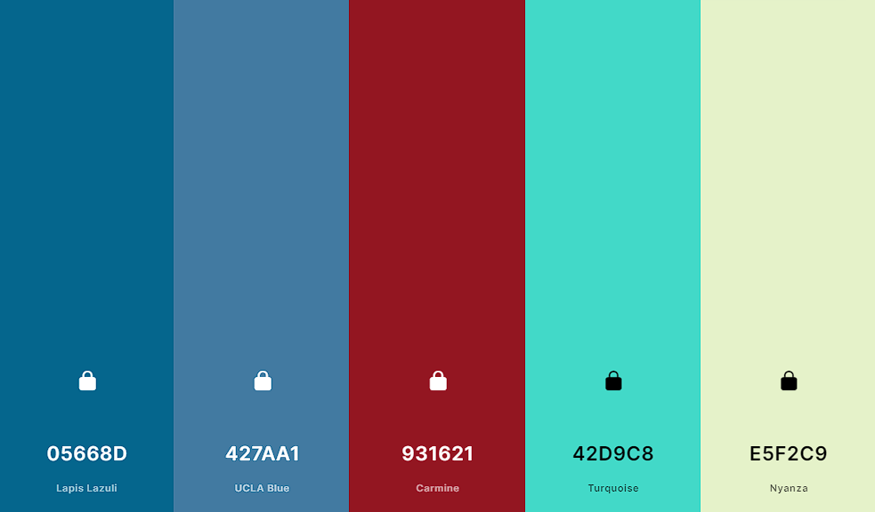
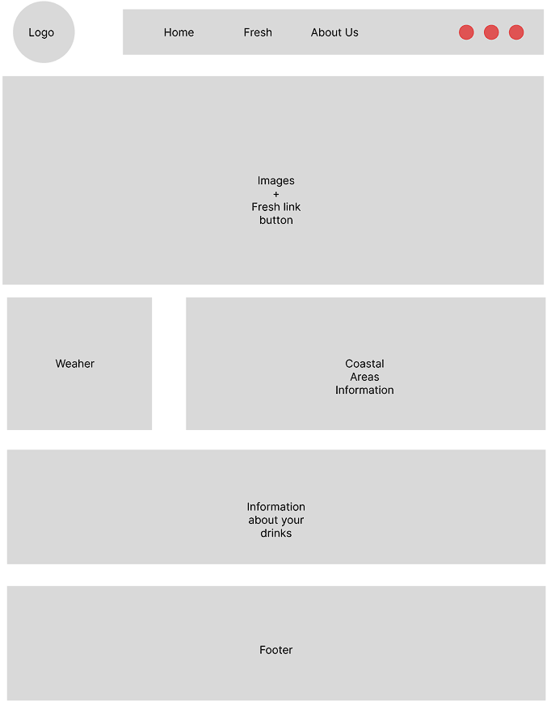
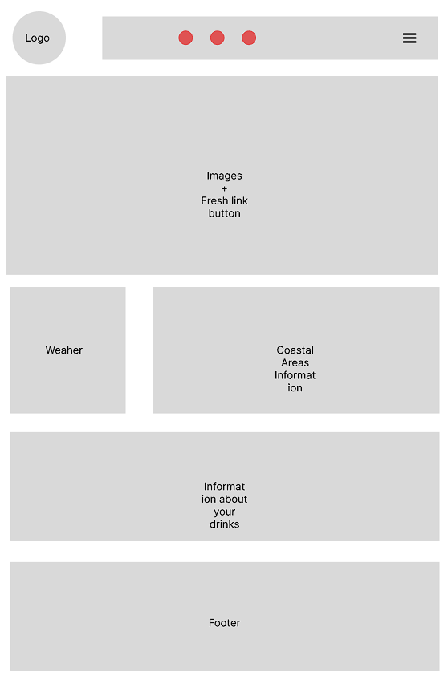
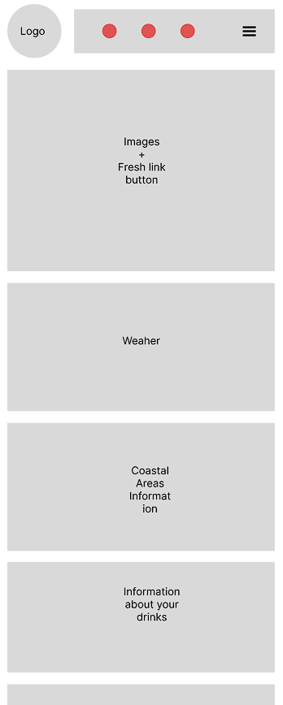

Site Name and Purpose
The name of the web page will be Bountiful Foods. Bountiful Foods is a small business specializing in organic, locally grown foods. They are physically located in Carlsbad, California, however, they have many food trucks that cover the coastal area from Los Angeles to San Diego. The company sells fruits and produce directly from the farmers in the area, but also uses some national and international suppliers. The owner-operated company caters to walk in traffic at their storefront in Carlsbad and, of course, their food trucks. They deliver and manage those orders on the phone and via the website. The mission is to provide fresh and healthy food options, including organic, made to order, fruit drinks and fruit bags, to the local population and to tourists visiting the coastal areas.
Target Audience and Scenarios
Persona 1: A user who is health-conscious and cares about consuming fresh, natural ingredients would be more inclined to visit a web page for fresh smoothies made of fresh fruit rather than a smoothie chain that may use processed or artificial ingredients in their products. They may want to know more about the nutritional value of the smoothies, the source of the ingredients, and any potential health benefits associated with consuming fresh fruit.
Persona 2: A user who has food allergies or sensitivities may be more interested in a web page that offers fresh smoothies made from specific fruits that they know they can consume safely. For example, if someone is allergic to certain preservatives or artificial sweeteners commonly found in smoothie chains, they may opt for a fresh fruit smoothie that is made with only natural ingredients and free from any potential allergens.
Persona 3: A user who is passionate about supporting local businesses and sustainable agriculture may be more interested in a web page that sources its ingredients from local farms and markets. They may want to know more about the farms and farmers who grow the fruit used in the smoothies, as well as the environmental impact of sourcing locally.
Persona 4 : A user who is particularly discerning about the taste and quality of their food may be more interested in a web page that offers a variety of unique and flavorful fresh fruit smoothies. They may be interested in trying new and exotic fruits or combinations of fruits that they may not find at other smoothie chains. They may also appreciate the opportunity to customize their smoothies to their liking, choosing the specific fruits and other ingredients that go into their drink.
Color Scheme
Color palette used for the webpage.
Typography
Header example
Smaller header example
Paragraph example
Wireframes
Large viewp

Medium View

Small View
